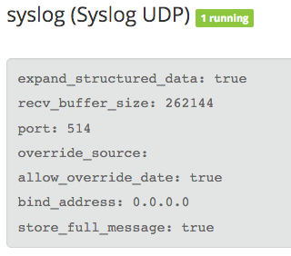

Configure Graylog Inputs¶
In order for Graylog to receive log messages, you will need to configure one or more inputs.
We use GELF for our collector and it is an open log format with many native integrations.
Syslog¶
- Click on System->Inputs
- Select Syslog UDP
- Select Launch new input.
- Follow the example configuration below
Note: If you are not root, you may not be able to use ports below 1024, in that case simply add a 0 to the port.
GELF¶
- Click on System->Inputs
- Select Gelf UDP
- Select Launch new input.
- Follow the example configuration below